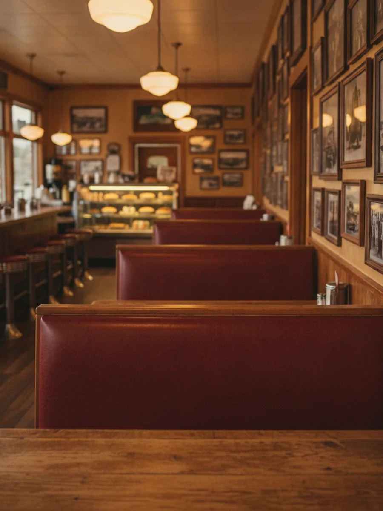

Our story
Since 1933, and still counting
Most of Vernal has never known a Main Street without the Ranch on it. Here is the long way to today, one generation at a time.
-
1933
The doors open
A family eatery takes root in Vernal, feeding ranch hands, oil crews and travelers passing through the Uinta Basin.
-
1949
The 7-11 Ranch name
The name Vernal still says today takes hold. The griddle never cools, and the coffee is always on.
-

Inside the Ranch, where the walls have kept the town's photographs for decades -
Decades on
Booths, pie & regulars
Generations of families grow up in the same red booths. The recipes stay put, and so do the regulars who order them by heart.
-
Today
Still family-run
The oldest continuously family-owned business in Vernal, with 2,300 neighbors following along and homemade pie still coming out of the oven.